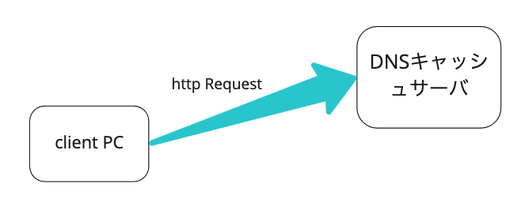
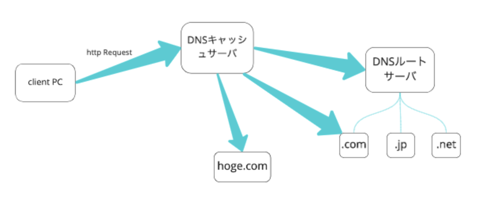
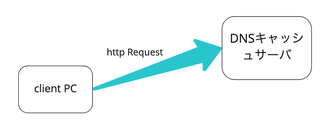
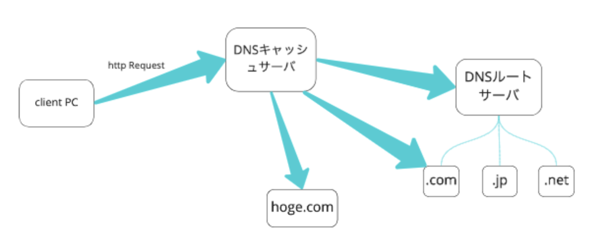

どんな流れでIPアドレスを取得してる？

主な役割
DNSキャッシュ
他のDNSサーバーに問い合わせる

主な役割
TDL（トップレベルドメイン）の情報を管理・保持している。

ドメイン名でリクエストした時に、裏でDNSが名前解決を行っているから。
DNSとはIPアドレスとドメイン名の紐付けをするシステム。
ドメイン名: whizzy.co.jp
IPアドレス: 176.34.61.54

DNSキャッシュ
他のDNSサーバーに問い合わせる
TDL（トップレベルドメイン）の情報を管理・保持している。
